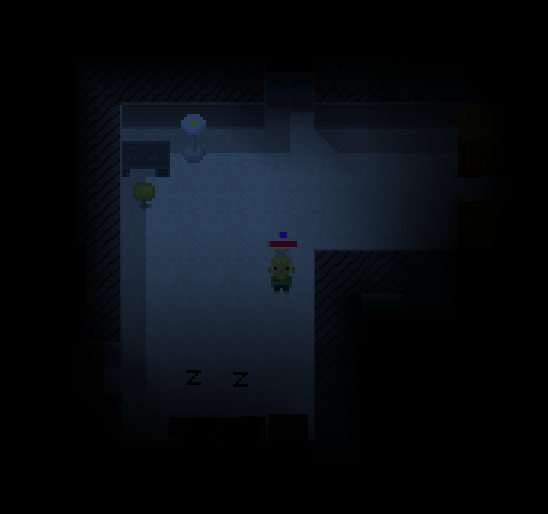
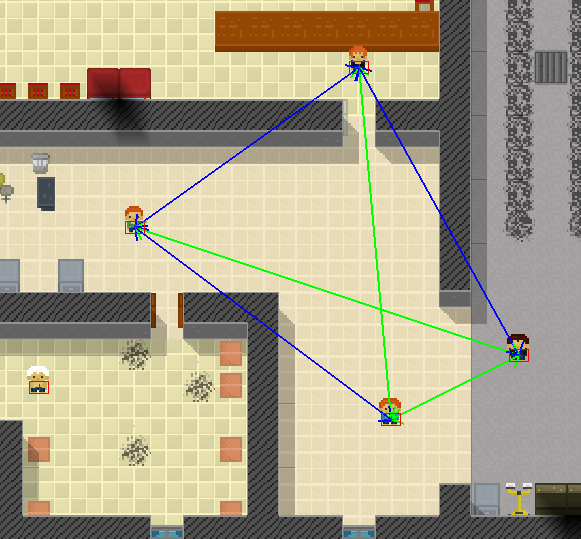
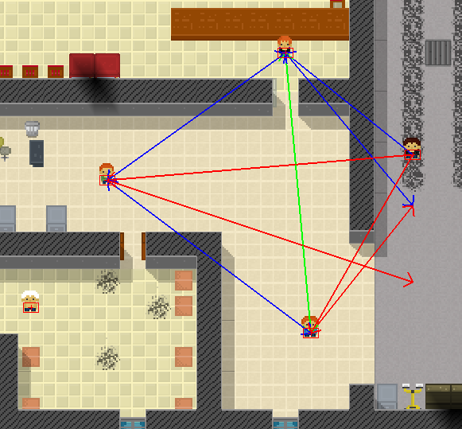

For a while now, I wanted to introduce you to a project that I started around two years ago. While not complete, the project has reached enough maturity so I can talk about it, show nice screen shots and envision its release.
This project is called Dust : The Abandoned Land, and it is a video game in the mindset of Build and Defend. Essentially, Dust contains many of the things that I wanted to add to B&D, but that I could not because it would have completely changed the game, or because it would have required to completely reprogram the game engine. Dust is a top-down, third person 2D game in a 3D world, where players try to survive in an post apocalyptic world filled with strange creatures as simple as that. The game is played real time (i.e. it is not turn based) in an gigantic and procedurally generated world populated with different areas and encounters. I would say that Dust is a Rogue Like (if you do not follow the very strict definition).
(click to enlarge)
There are still plenty of work to be done, but it is likely that I will release Dust in the following year. During the development I had a lot of fun experimenting and playing with mechanics. I spend a lot of time just setting situations in the editor, and then watching the simulation unfold.
In some aspects, I think Dust is quite different from what is out there. One of its shinny and unique feature is the behavior/artificial intelligence of the creatures (including the other (NPC) survivors): I wanted to create a rich world with rich interactions with both friendly and hostile creatures. I am not talking about high amount of pre-coded dialogs. Instead I am referring to the richness that come when each creature has its own individual internal representations of the world: A creature is only aware of what he/she/it can see, have seen before, can hear/feel, have been told about or read about. Clever creatures can retain more information, for longer time, make more complex plans, and better communicate with their pairs. While simpler creatures are much closer to a simple reactive system.
This vision/goal is at the exact opposite of the “Less is more” talk from Kimberly Voll in GDC15 (https://www.youtube.com/watch?v=1xWg54mdQos).
In other words, I want to be as far as possible from the GTA Logic:
For those who are not familiar, one star in GTA means that the coops are now coming after you.
So instead of the GTA Logic, each creature in Dust has his/her/its internal representation of the world. The two following examples are two scenarios that illustrates what creatures in Dust behave:
An enemy (e.g. an aggressive survivor) wont see you through a wall (unless specific ability or equipment). He wont even know you are here. However, if you make a noise (the kind of noise that cannot identify who you are like breaking a glass), he might be interested in checking the source of the noise (if there is nothing more important to do). If he sees you, he might choose to attack you, or to run alert some of its friends (if it is clever enough). Friends to which he will communicate what he knows (that he saw you, what/who you are, what you are carrying, where you were seen the last time, etc.). Soon, they will all come back after you (or the place they last saw you).
This is a simple example what show that all the enemies do not share the same knowledge of the world. Now, here is a question you might ask yourself: What if you kill the a monster before it can alert anyone? The next example covers that, and a bit more.

Imagine the following situation: You have been accepted by a group of ten npc-survivors inside of an shelter house. All survivors are now friendly toward you. However, you decide that the equipment of one of the survivor is quite nice, and you decide to wait for the night and kill him in his sleep to steal his equipment. Luckily for you, he sleeps alone in a bedroom. The night being, you go in his room and you hit him with a piece of wood while he sleeps. However, you do not kill him nor you put him unconscious. So he wakes up, and start to fight you. Or alternatively, he runs away to get some support. Now suppose that he runs into someone elses room. He wakes up another survivor, tell about you, and now, they both come back to kill. Now suppose that you them both of them before they can alert anyone else. Immediately after that, you run away from the crime scene. The noise of the fight has woke up the other survivors, and they are now coming to check for the noise. However, they did not see you killing them nor they have been told about your actions. So they wont know you are the culprit, and therefore, you wont be accused more than any of the other survivors (unless your cloths are still full of blood or some other clues).
This second example illustrates that the internal representation of an agent contains, among other things, relational information that can be transmitted or change individually over time. This illustrates what Dust AI can do, and I am certain that you have not played much games like that :).
The following part of this post is a bit more technical than the previous. You have been warned 🙂
The world of Dust is very large, and only a tiny fraction of the world is loaded in memory at any time. Nevertheless, there might be thousands of intelligent agents in this tiny chunk of world, and having an efficient, salable, real time, reactive and modular AI system was (and is still) quite complex. In the remaining of the post, I will talk about the overall architecture of the of the AI in Dust. Since the AI in Dust has evolved from the AI in B&D, I will first start by presenting the AI in Build & Defend. I will talk about I learned from it, and how it leads to the Dust AI.
The AI system in Dust has been designed to satisfy the following constraints:
It should be powerful enough to run the kind of behavior described in the previous examples (and much more). It should be efficient enough to run on thousand of creatures at the same time in a real time environment. This mean that complex computation should be either splitted or put on a separate thread. Routines should be modulable and composable. We do not want to write 10 times the routines that will look of an object and try to obtain it (by various possible ways). It should be easy to use. Writing the AI of a new creature should only be a couple of lines of code from existing blocks. It should handle an infinite but only partially loaded in memory world. The AI should be able to compose complex plans (e.g. I am hungry -> I need to eat -> let’s find something to eat -> let’s take a piece of meat in the fridge -> let’s cook the meat -> eat the meat). The AI should be reactive. If something news append (e.g. a new object appears), the AI should immediately react to it accordingly. The AI should be able to resume jobs, or more generally, to start partially started jobs. The AI in Dust is very strongly inspired from the AI in B&D. So, let’s talk about it first: In B&D, there are two types of AI: The AI for the “simple” mobs (monsters, rabbits, etc.) and the AI for the advances mobs (workers, elfs and your dog).
The simple AI is essentially a leaky state machine: A state machine coupled with some continuously running routines that scan the environment. For example, the wood-eater is a small creature that look for wood blocks to eat. However, if a player come too close, it will run away. Wood-eaters are particularly dangerous if your fortress is made of wood. Because they run away and because they are often along aggressive creatures, a simple wood-eater can be quite devastating. The AI of wood-eaters is a state machine with five states (sleeping, standing, running away, going to a piece of wood, eating a piece of wood). In addition, a loop is continuously looking for accessible blocks of wood, and checking that players are far enough (unless it is sleeping)
The AI of the advances creatures is different: The class that implement each advance creature overrides a function that return a single action object (derived from an abstract action class) and send it to the AI engine. An action is a state machine with the following possible status:
The GoTo action is one of the most basic action. It makes a creature go to a given position defined by its coordinates. Let’s illustrate these status with the GoTo(position) action
B&D has a relatively small library of such “primitive” actions (FindObject(ObjectType), GoTo(position), Follow(Entity), Attack(Entity), Taking(Object), Dropping(Object),etc.). And, all the more complex actions are composed from these simpler actions.
In order to compose actions, the B&D AI has a library of meta actions. A meta action is an action that compose the execution of various sub-actions. For example, the meta action DoAll is initialized with a list of sub-actions. Then, when executed, and after checking that all of these actions are possible, the DoAll with execute all the sub-actions sequentially one after another. As an example, combining FindReachableItemOnGround(x=Food), Goto(x) and Grab(x) with DoAll makes the creature look for food items, go near it, and grab it. Let’s call this the GetReachableItemFromGround action:
GetReachableItemFromGround(x=Food) := DoAll([FindReachableItemOnGround(x),Goto(x),Grab(x)])
Another very useful meta action is the DoAny action. This meta action tries to execute at least one one of its sub-actions (in order). For example, combining FindReachableItemOnGround(x) and GetReachableItemFromContainer(x) with DoAny makes the creature obtains the item x either by finding it on the ground, or by taking it from a container (e.g. a chest).
Finally, the AI has a large library of actions made from combining raw actions and meta actions. Here are some example of these combined actions in B&D: ApplyPotionOnEntity, AttackMob, BuildOrder, FindEntity, Cook, Craft, CutTree, DigHole, DigWall, Bark, Urinate (for the dog), Eat, Wait, RunAway, FlyAway, Follow, GetCoin, EnsureObjectInInventory, Harvest, RandomWalk, RandomWalkInArea, Sleep, Rescue, etc.
In B&D, the action returned by the workers is a DoAny action filled with the ordered list of action we want the worker to execute. The last actions in the list will only be executed only if the first actions are no possible. The source code of the AI of a worker looks like that:
class Worker extends Entity
{
Action ai_getAction()
{
DoAny r = new DoAny();
if(isTired())
r.add( new Sleep());
if(isHungry())
r.add( new EatSomeFood());
...
if(isDangerousOutside())
r.add( new RandomWalkInFortress(duration=10s));
else
r.add( new RandomWalk(duration=10s));
return r;
}
}
Let’s suppose the worker is hungry but not tired. This ai_getAction call would return the following action:
DoAny
|
+--EatSomeFood [extends DoAll]
| |
| +--EnsureItemInInventory(x,y=Food) [extends DoAny]
| | |
| | +--HasItemInInventory(x,y)
| | +--GetReachableItemFromGround(x,y) [extends DoAll]
| | | |
| | | +--FindReachableItemOnGround(x,y)
| | | +--Goto(x)
| | | +--Grab(x)
| | +--GetReachableItemFromContainer(x,y) [extends DoAll]
| | |
| | +--FindReachableItemInContainer(x,y,z)
| | +--Goto(z)
| | +--GrabFromContainer(x,z)
| +--Eat(x)
+--RandomWalk
Note: The Python script used to make this pretty print of the behavior tree is available at https://github.com/achoum/drawtree.
Note that the action EatSomeFood is simply a DoAll action pre-filled with some sub-actions. Here is some comment about some of the raw actions:
Now let’s suppose we want to design an action that look for an object. And suppose that the test about the validity of the object is very specific (i.e. more complex than just a type test). For example, we are looking for a ranged weapon causing at least 10 points of damages. Instead to re-writing the EnsureItemInInventory action (or any of the sub-actions), we can simply anonymously override its isValidItem(x) function:
r.add(new EnsureItemInInventory()
{
@Override
boolean isValidItem(Entity x)
{
return (x instanceof RangedWeapon) && ((RangedWeapon)x).damages() >= 10;
}
}
);
Generally the action ai_getAction() is called whenever the current action terminate (will success or failure). A nice feature about this AI system is that it is easy to debug (with the right instrumentation). For example, if a worker does not do an action it was expected to do, the developer can look at the logs for the sub-action responsible for the failure. Also, because designing a new action is mainly about assembling existing sub-actions, designing new actions is both fast and less prone to error than if all the sub-actions had to be implemented.
Additionally, and thanks to the Java online-recompilation (you can change the source code and recompile it without having to restart the game), the development and the tuning of the AI is fast and pleasant.
This architecture is great, but it does not allow for creatures to be reactive to imminent danger. Therefore, creatures continuously scan the environment for monsters (see following example) and react to external damages.
class Worker extends Entity
{
void every_1s()
{
Mob monster = scanMonsterAround();
if(monster==null)
return;
if( isSoldier() )
{
if(!isCurrentActionContains(AttackingAction.class))
setAction( new AttackingAction(monster));
}
else
{
if(!isCurrentActionContains(RunninAwayAction.class))
setAction( new RunninAwayAction(monster));
}
}
}
Globally, the B&D AI framework is quite powerful and can fulfill most of the requirement for Dust. This architecture has however some big flaws:
First, it is not reactive. The hack in the every_1s function ensures that a worker don’t completely ignore surrounding monsters until it finishes its current action. However, the worker is not reactive to other internal (e.g. I am tired, I am hungry, I need medical attention) and external (e.g. there is an object of type X on the floor, a friend needs help, etc.) signals.
Second, a creature needs to stop while evaluating the possibility of its current action. The possibility of some actions require a lot of computation to evaluate. For example, finding accessible wood blocks for wood-eaters might require to call the path finding algorithm on hundreds of locations. Given that the game should be played real time, and given than there are many other creatures using path finding at the same time, you can sometime see wood-eaters being stuck for several seconds without moving. The AI is actually stuck looking for wood.
Now, let talk about the Dust AI, and how it solves these two issues. The Dust AI differs from the B&D AI on three main points:
First, instead of returning a single action representing the entire plan of the creature, Dust AI requests and manages an action for each interesting entity in the world, as well as a general action non related to entities. Therefore, when a new entity appears to the creature (because it sees it, or because it has been told about), the AI engine request the action for the entity (and this entity only) instead of requesting all the actions for everything in the world (as it is the case in B&D). Depending of the priority of the action associated with the new entity, the engine will decide or note to evaluate the possibility of this action while the current action of the creature is still being executed. This trick makes both the AI more reactive but also much less expense for the CPU.
Secondly, Dust AI engine can detect that a newly proposed action (where the possibility has not yet been evaluated) is equivalent to an older action for which the possibility has already been evaluated. In this case, the possibility status of the new action is simply copied from the old one, and possibility does not need to be re-evaluated. There are various extra tricks to make sure that possibility status are still “valid”.
Finally, Dust AI can evaluates the possibility of an action while another action is still being executed. This ensure that creatures execute actions one after the other without pausing in between.
So far we talked about the actions. Another important part of Dust AI is the individual world representation of each creature. In the current version, the internal representations only include information about the other entities but not the geometry of the world itself (i.e. If the world change, all the creatures knows it immediately). The architecture of the internal representation system is relatively simple: Each creatures as a structure containing the entities it knows about, with various extra information such as: Can I current see the entity. What is the last known position. Who told be about it, etc.
The next two pictures shows the internal perception of five survivors talking to each others. The green arrows indicate awareness because of direct visual contact. The blue arrows indicate awareness because of transmitted information. In this example, the survivors can talk if they see each other. Finally, the red arrows indicate the last known position of the target. The second picture was obtained after the right survivor moved north for 5 meters.


This is all for this first post. The AI being an important part in Dust, there will be many other posts about it. However, the next post is already planned and it will be about the world generation :).
{kind=link}